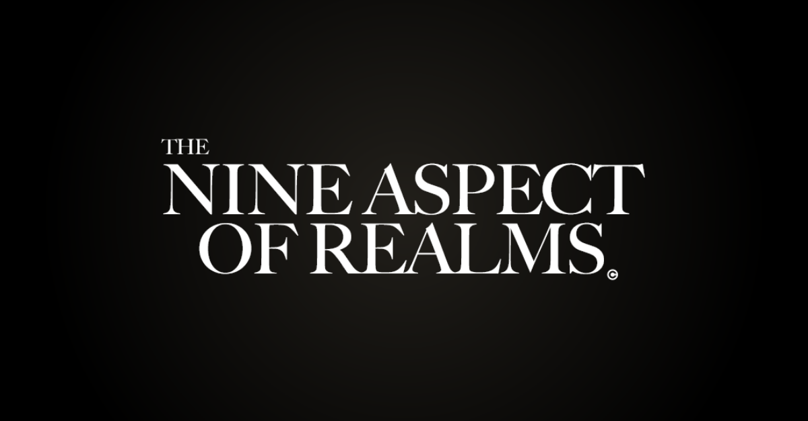

NAOR: The Nine Aspect of Realms
A single-player 2D pixel-art action platformer with a dark storyline, built in Unity by the OTK student game development team from 2021 to 2024.
The game
- Fluid movement: dash, glide, swing, crouch, and wall grab, slide, climb and jump.
- Melee combat: a 3-hit combo, charge and plunge attacks, plus throwable daggers and bombs.
- Soul and mana system: collect souls from enemies and spend mana on abilities like Soul Walk.
- Enemies: sword, shield and archer enemies, and a necromancer that raises creatures.
- World: NPC dialogue and fetch quests, inventory, portals, moving platforms, traps and a day-night cycle.
How the team worked
- Three departments: Game Design for mechanics and narrative, Arthouse for concepts and assets, and Code Effect for building the game in Unity.
- Process: tasks tracked in Jira, feature branches merged into
develop, and GameCI building Windows and WebGL versions automatically. - My role: Lead Game Designer at OTK from 2021, then Project Leader for the club's 20 volunteer developers across 4 game teams.
The browser build is an in-development test scene with debug controls, not a finished level.